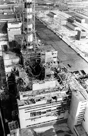

El diseño del reactor RBMK fue deficiente desde el punto de
vista de la seguridad y despiadado para los operadores,
lo que provocó un estado operativo peligroso. Los operadores no fueron
informados de esto y desconocían que la prueba realizada podría haber
provocado una explosión en el reactor.
Imagen referencial
¿Que es la pata de elefante de chernobyl?
La Pata de Elefante en Chernóbil es una masa extremadamente radiactiva de corio
formada por la fusión del combustible del reactor nuclear tras el accidente de 1986.
Compuesta principalmente de dióxido de silicio, uranio, calcio y otros óxidos,
esta sustancia se filtró hacia abajo y se solidificó,
adquiriendo su distintivo nombre por su parecido con la pata de un elefante.